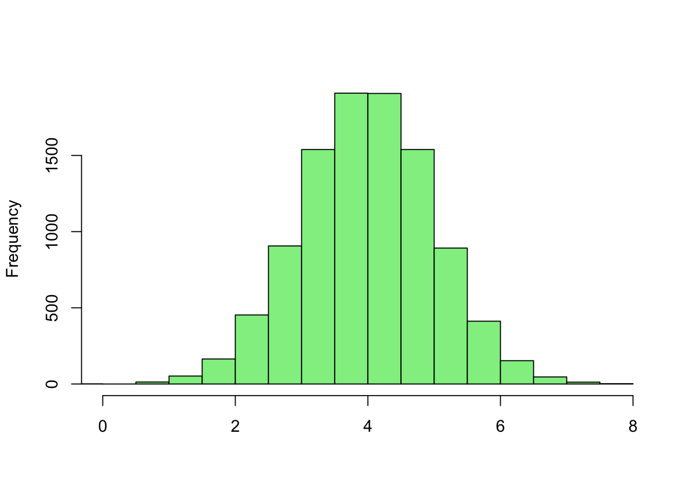
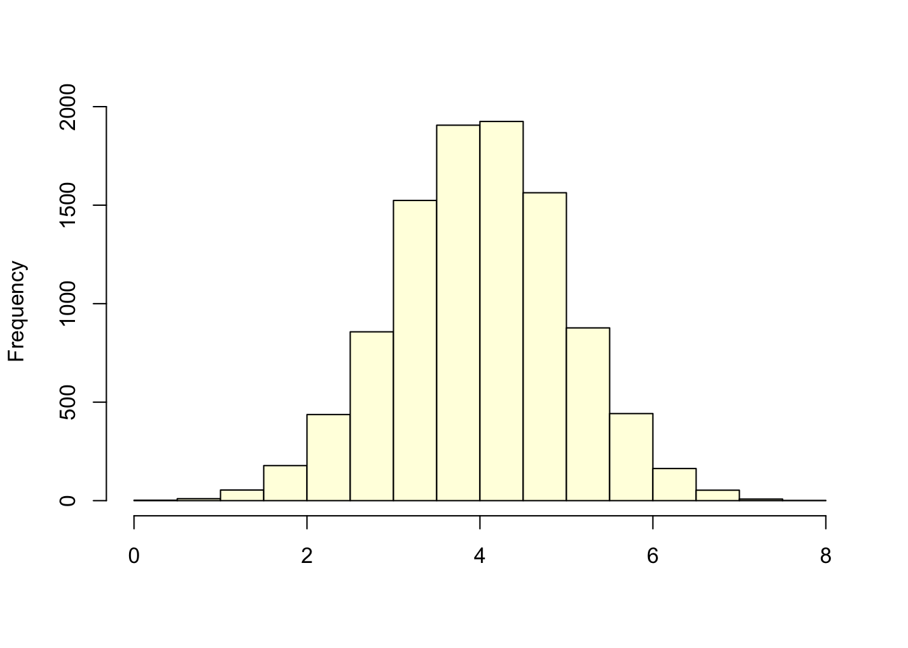

| 7.2 | 7.8 | 6.8 | 6.2 | 8.2 |
| 8.0 | 8.2 | 5.6 | 8.6 | 7.1 |
| 8.2 | 7.7 | 7.5 | 7.2 | 7.7 |
| 5.8 | 6.8 | 6.8 | 8.5 | 7.5 |
| 6.1 | 7.9 | 9.4 | 9.0 | 7.8 |
| 8.5 | 9.0 | 7.7 | 6.7 | 7.7 |
Lecture 2
Measure of center and variability
Introduction
- Why do we need numerical measures?
- Parameters - associated with population
- Statistics - associated with sample from population
2.1 Measures of Center
Mean
\[ \sum_{i = 1}^n{x_i} = x_1 + x_2 + x_3 + \dotsb + x_n \]
Sample Mean
\[ \bar{x} = \frac{\sum{x_i}}{n} \]
Population Mean
\[ \mu \]
Example 2.1
[1] 2 9 11 5 6\[ \bar{x} = \frac{\sum{x_i}}{n} = \frac{2 + 9 + 11 + 5 + 6}{5} = 6.6 \]
(2 + 9 + 11 + 5 + 6)/5Mean of birth weights:
[1] 7.57Median
The median of a set of n measurements is the value of x that falls in the middle position whent he measurements are ordered from smallest to largest.
[1] 2 9 11 5 6Sort the data an find the median
[1] 2 5 6 9 11[1] 6What if you have an even number of measurements?
[1] 2 9 11 5 6 27[1] 2 5 6 9 11 27[1] 7.5Comparing
Median - less sensitive to outliers
Add a new measurement to birth weights (50 lbs!)
| data | mean | median |
|---|---|---|
| original | 7.6 | 7.7 |
| with added | 8.9 | 7.7 |
- if distribution is skewed right, the mean shifts to the right and mean is greater than median
- Opposite if skewed left
- if distribution is symmetric, the mean and the median are equal
Mode
The category that occurs the most frequently. It’s possible to apply to classes created in histogram but I haven’t really seen it in the wild.
It’s possible to have more than one mode (ties). In this case
Homework
Homework asks you to create dot plots. These are basically histograms where each number is plotted individually and stacked on top of each other as dots. See figure 2.2 on page 56 as an example
[1] "2.1.1, 2.1.2, 2.1.3, 2.1.9-10, 2.1.13, 2.1.20"Answers: Chapter 2 - Section 1
2.2 Measures of Variability
Motivation
- now we can described data using a single number to represent the center.

- We need to be able to describe the variability in the data
Range
The range is the difference bettween the largest and smallest measurements.
[1] 2 9 11 5 6[1] 2 11\[ 11 - 2 = 9 \]
- very sensative to outliers
- does not let you know what’s going on between the two extremes

Variance
The deviation of points i the difference between thr point and the mean
Variance of population \[ \sigma^2 = \frac{\sum\left(x_i - \mu\right)^2}{N} \]
Variance of sample \[ s^2 = \frac{\sum\left(x_i - \bar{x}\right)^2}{n - 1} \]
[1] 2 9 11 5 6Sample Variance
[1] 12.3Sample standard deviation
[1] 3.5- What’s the deal with \(n-1\)?
- Why do we need to square it?
Standard deviation
\[ \sigma = \sqrt{\sigma^2} \] \[ s = \sqrt{s^2} \]
Computing formula for calculating variance or shortcut formula
\[ s^2 = \frac{\sum{x_i^2} - \frac{(\sum{x_i})^2}{n}}{n-1} \]